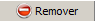

Manual de Utilizador
O que é EnaOCR?
EnaOCR é um programa de desktop que permite converter múltiplos ficheiros de imagem em texto ASCII. É possível a definição das zonas da imagem a processar.
O Resultado poderá ser guardado em simples texto, separado por vírgulas ou XML.
Introdução
Se tiver múltiplos ficheiros de imagem dentro uma pasta, por exemplo, ficheiros TIF, e essas imagens são do mesmo formato, então é possível extrair o texto de uma área pré-definida, de todas as imagens que se encontram no interior dessa pasta, e armazenar os resultados, num ficheiros de texto, delimitado por uma vírgula para cada registo ou num ficheiro XML.
Existem três passos para o processamento das imagens
Primeiro Passo: Definir as zonas de uma imagem a processar.
Uma zona é uma área da imagem que você deseja de converter em texto.
Para definir uma zona, é necessário seleccionar uma imagem que é a representante de todas as imagens contidas nessa pasta e definir as zonas a serem processadas.
Por exemplo, suponha que você tem mil facturas de clientes numa pasta em formato TIF. Suponha que cada factura contém um nome, a data da compra e um número de cliente.
Se esses valores foram todos localizados na mesma área da factura em todos os ficheiros a serem processados, é extremamente fácil obter o texto de cada um dos documentos.
Segundo Passo: Processar todos os ficheiros de imagem dentro de uma pasta
Após as regiões terem sido definidas, pode-se então seleccionar uma pasta que contenha ficheiros de imagem, e o EnaOCR irá processar todos os ficheiros, convertendo todas as zonas anteriormente definidas em texto.
Depois dos seus ficheiros de imagem terem sido convertidos para texto, é possível corrigir esses mesmos resultados e verificar a sua veracidade.
Terceiro Passo: Guardar resultados em ficheiro
Uma vez estando satisfeito(a) com a precisão dos seus resultados, pode armazenar os mesmo num ficheiro de dados. É oferecido dois meios para exportar seus dados para o ficheiro de dados, Texto Delimitado ou ficheiro XML.
Janela Inicial
Ficheiros de Teste
Ficheiros para teste foram incluídos nesta instalação para testes do próprio utilizador.
Esses ficheiros encontram-se na pasta EnaOCR\samples
samples\Document1.TIF
samples\ Document 2.TIF
samples\ Document 3.TIF
samples\ Document 4.TIF
O que são Zonas?
EnaOCR permite converter áreas seleccionadas de uma imagem para texto. Você define essas áreas, da qual são chamadas de zonas.
Usando uma imagem representativa do documento como um modelo, imagem de exemplo, você pode seleccionar uma ou mais zonas a serem processadas.
Cada rectângulo indica uma zona definida por si. Para definir uma zona pode digitar manualmente os valores para a posição(X, Y) e respectiva Largura / Altura nas caixas de texto apresentadas para o efeito, ou simplesmente arrastando um pequeno rectângulo usando o rato para desenhar uma área de processamento sobre a imagem.
Definir Zonas
Para iniciar o processo de definição de zonas, seleccione o botão Definir Zonas na barra de ferramentas que se encontra no topo da aplicação.
Poderá criar um determinado grupo de zonas a serem processadas, para isso basta clicar no botão adicionar e escrever o nome do respectivo grupo na caixa de texto indicada.
Caso queira remover a zona basta clicar no botão remover 
Uma vez criado o tipo de zona “grupo”, poderá da mesma maneira que a anterior, criar várias zonas a serem processadas.
Não se esqueça que uma vez terminado o processo de criação de zonas, deverá seleccionar o botão gravar, a fim de guardar todas as suas zonas na base dados do programa, para mais tarde não ter que perder tempo na definição de zonas.
O estado de gravação é exibido por uma barra de progresso na parte inferior da janela.
Editar Zonas
Uma vez definidas as zonas, poderá seleccionar a zona a editar e arrastar com o rato um rectângulo e, redor dos caracteres que deseja capturar, caso prefira fazer manualmente, poderá colocar as respectivas coordenadas nas caixas de texto indicadas.
Não se esqueça de gravar as alterações feitas na base dados.
Processar Ficheiros
Para iniciar a fase de Processamento Ficheiros, seleccione o botão Processamento de Ficheiros na barra de ferramentas que se encontra no topo da aplicação.
EnaOCR converte múltiplos ficheiros de imagem em texto ASCII. Para processar todos os ficheiros dentro de uma pasta, terá seleccionar que tipo de zona pretende. Também será necessário indicar uma pasta da qual contenha imagens do tipo TIF, BMP, JPG, GIF, PNG.
Caso não seja identificado nenhum tipo de imagem no interior da pasta, é indicado uma barra vermelha.
Caso exista imagens, é mostrada uma barra verde, seguida do endereço da pasta
Uma vez seleccionada a pasta de input, é necessário seleccionar o botão processar ficheiros
Os ficheiros de imagem reconhecidos pelo programa serão exibidos na lista do lado esquerdo da janela. Os resultados obtidos serão exibidos na lista do lado direito da janela em tempo real.

O estado do processamento é exibido por uma barra de progresso na parte inferior da janela
Verificar Resultado
Uma vez processados os ficheiros, o resultado é mostrado no lado direito da janela.
Cabe ao utilizador fazer a verificação dos dados, caso veja alguma irregularidade, apenas terá de clicar duas vezes sobre o campo a alterar, e modificar o mesmo.
Exportar Resultados
Para iniciar a fase de exportação resultados, seleccione o botão Exportar Resultados na barra de ferramentas que se encontra no topo da aplicação.
Inicialmente poderá definir em exportar os resultados para texto ou para XML.
Para dar inicio ao processamento dos dados seleccione o botão Processar Exportação seguido da opção de output, neste caso escolhemos XML.
Se pretender integrar os dados adquiridos com o sistema de informação Web da ENA, poderá alterar os nomes das zonas conforme a base dados da ENA, a fim de possibilitar a inserção dos resultados de forma rápida e simples.
Para isso deverá indicar o tipo de factura seguido da opção de cada zona, e seleccionar o botão alterar XML
Uma vez alterado os elementos dos XML, podemos guardar o ficheiro gerado no nosso computador.
Caso tenha seleccionado a opção texto, terá a possibilidade de definir qual o carácter de separação dos dados.

Repare que cada zona está separada por vírgula
Opções
Toda a aplicação utiliza o sistema de reconhecimento de caracteres Tesseract. Para que a aplicação não esteja restrita a futuros desenvolvimentos deste sistema é possível indicar a pasta de destino da mesma.
Devido a existirem milhares de caracteres diferentes por todo o mundo, é necessário definir qual o idioma do texto a processar, actualmente a aplicação reconhece caracteres portugueses e ingleses através da norma de codificação ISO639-3.
Caso seja necessária ajuda na forma de utilização da aplicação, poderá recorrer á mesma através do menu Ajuda.
O manual de Utilizador será mostrado no ecrã através do seu browser predefinido.